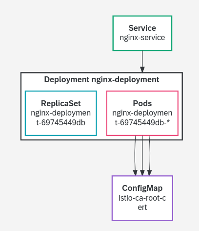
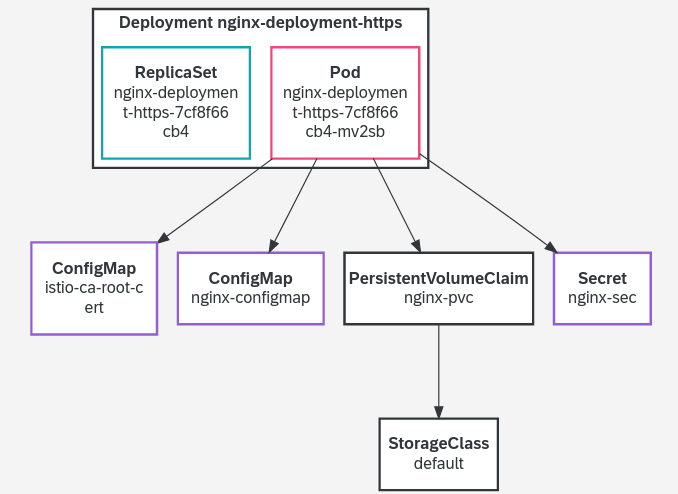
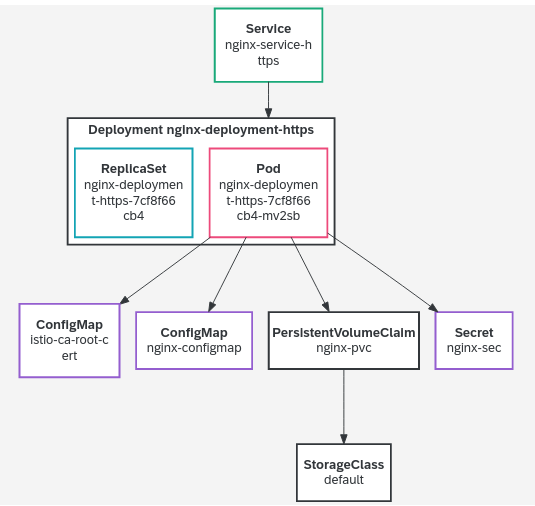

Tutorials: SAP BTP trail account
1.kubectl basics
Register account of SAP BTP trail system. I am using BTP Kyma runtime for the demo.
Choose the entitlements for k8sdev subdomain:
- Alert Notification: Standard plan
- Continuous Integration & Delivery: default (Application) or the trial (Application) or free (Application) plans which are not charged
- Kyma runtime: any available plan in the list (trial and free are not charged)
- Launchpad Service: standard (Application) or free (Application)
- SAP HANA Cloud: hana
- SAP HANA Schemas & HDI Containers: hdi-shared
Enable Kyma runtime in k8sdev subdomain, and download kubeconfig file to local directory ~/.kube/ and rename it to ~/.kube/config-btp-kyma.yaml.
If the directory ~/.kube/ does not exist, create it.
Add below line into file /etc/profile.local and make it effected by command source /etc/profile.local.
export KUBECONFIG=$HOME/.kube/config-btp-kyma.yaml
Check current kubeconfig file.
Use the kubectl config command to get current context of configuration file.
james@lizard:~> echo $KUBECONFIG
/home/james/.kube/config-btp-kyma.yaml
james@lizard:~> kubectl config view
james@lizard:~> kubectl config get-contexts
Using SAP BTP, brew and oidc-login need to be installed.
Install krew (https://krew.sigs.k8s.io/docs/user-guide/setup/install/)
james@lizard:~> (
set -x; cd "$(mktemp -d)" &&
OS="$(uname | tr '[:upper:]' '[:lower:]')" &&
ARCH="$(uname -m | sed -e 's/x86_64/amd64/' -e 's/\(arm\)\(64\)\?.*/\1\2/' -e 's/aarch64$/arm64/')" &&
KREW="krew-${OS}_${ARCH}" &&
curl -fsSLO "https://github.com/kubernetes-sigs/krew/releases/latest/download/${KREW}.tar.gz" &&
tar zxvf "${KREW}.tar.gz" &&
./"${KREW}" install krew
)
Append below two lines to file /etc/profile.local make it effected by command source /etc/profile.local
export PATH=$HOME/.krew/bin:$PATH
Install oidc-login (https://github.com/int128/kubelogin#setup) .
james@lizard:~> kubectl krew install oidc-login
Check the nodes
Use the kubectl get nodes command to get the basic information about the clusters' nodes.
There will be a pop-up web page for authentication with registered email address and password.
More information can be found by appending --help to command.
james@lizard:~> kubectl get nodes
NAME STATUS ROLES AGE VERSION
ip-10-250-0-53.ec2.internal Ready <none> 47m v1.21.10
Get nodes information with different format output, e.g., yaml format.
james@lizard:~> kubectl get nodes -o yaml
Get detailed information about a node by running kubectl describe node <node-name> or kubectl get node <node-name>..
james@lizard:~> kubectl get nodes ip-10-250-0-53.ec2.internal
NAME STATUS ROLES AGE VERSION
ip-10-250-0-53.ec2.internal Ready <none> 53m v1.21.10
james@lizard:~> kubectl get nodes ip-10-250-0-53.ec2.internal -o wide
NAME STATUS ROLES AGE VERSION INTERNAL-IP EXTERNAL-IP OS-IMAGE KERNEL-VERSION CONTAINER-RUNTIME
ip-10-250-0-53.ec2.internal Ready <none> 56m v1.21.10 10.250.0.53 <none> Garden Linux 576.8 5.10.109-garden-cloud-amd64 docker://20.10.11+dfsg1
james@lizard:~> kubectl get nodes ip-10-250-0-53.ec2.internal -o yaml
james@lizard:~> kubectl get nodes ip-10-250-0-53.ec2.internal -o json
james@lizard:~> kubectl describe nodes ip-10-250-0-53.ec2.internal
Get namespaces information by running kubectl get namespaces.
james@lizard:~> kubectl get namespaces
NAME STATUS AGE
compass-system Active 58m
default Active 62m
istio-system Active 55m
kube-node-lease Active 62m
kube-public Active 62m
kube-system Active 62m
kyma-integration Active 52m
kyma-system Active 55m
Get running pods under specific namespace by running kubectl get pods -n <namespace>.
james@lizard:~> kubectl get pods
james@lizard:~> kubectl get pods -n kube-system
Check the proxy
We can use kubectl proxy command to open a tunnel to the API server and make it available locally - usually on localhost:8001 / 127.0.0.1:8001.
When I want to explore the API, this is an easy way to gain access.
Run the command kubectl proxy & and open http://localhost:8001/api/v1 in browser.
Just opening http://localhost:8001 will return an error because we are only allowed to access certain parts of the API. Hence the API path is important
james@lizard:~> kubectl proxy &
[1] 102358
james@lizard:~> Starting to serve on 127.0.0.1:8001
Example, get available API groups and so on via below link:
http://127.0.0.1:8001/
http://127.0.0.1:8001/api/v1
http://127.0.0.1:8001/api/v1/namespaces
http://127.0.0.1:8001/api/v1/namespaces/default
http://127.0.0.1:8001/api/v1/namespaces/sock-shop/pods
Check api-versions & api-resources
Get an overview of existing APIs by running kubectl api-versions and kubectl api-resources.
james@lizard:~> kubectl api-resources -o wide
james@lizard:~> kubectl api-versions
Namespace is a cluster, which includes services. Service may be on a node, may be not.
Access as application
If I access kubernetes as an application rather than an administrator, I cannot use the kubectl. Instead of kubectl I can use the program curl.
I have to send HTTP requests to the cluster. asking for the available nodes.
make sure kubectl proxy is running and serving on http://localhost:8001/.
Execute command below with a -v=9 flag, it shows all the information needed.
james@lizard:~> kubectl get nodes
Go through the command's output and find the correct curl request below.
curl -v -XGET -H "Accept: application/json;as=Table;v=v1;g=meta.k8s.io,application/json;as=Table;v=v1beta1;g=meta.k8s.io,application/json" -H "User-Agent: kubectl/v1.24.1 (linux/amd64) kubernetes/3ddd0f4" 'https://api.eb68ebe.kyma.ondemand.com/api/v1/nodes?limit=500'
Further information & references:
- There is a forum-like page hosted by K8s with lots of information around kubectl and how to use it best.
- Manage multiple clusters and multiple config files
- kubectl command documentation
- Shell autocompletion
- kubectl cheat sheet
- jsonpath in kubectl
2.Work on pod
Create pod
Create new namespace jh-namespace for my demo.
james@lizard:~> kubectl create namespace jh-namespace
namespace/jh-namespace created
james@lizard:~> kubectl get ns
NAME STATUS AGE
compass-system Active 2d1h
default Active 2d1h
istio-system Active 2d
jh-namespace Active 7s
kube-node-lease Active 2d1h
kube-public Active 2d1h
kube-system Active 2d1h
kyma-integration Active 2d
kyma-system Active 2d
Get current config information, which will be referred by following commands.
james@lizard:~> kubectl config view
Get current contexts.
james@lizard:~> kubectl config get-contexts
CURRENT NAME CLUSTER AUTHINFO NAMESPACE
* shoot--kyma--eb68ebe shoot--kyma--eb68ebe shoot--kyma--eb68ebe
Update context with new namespace by command kubectl config set-context <context name> --cluster=<cluster name> --namespace=jh-namespace --user=<authinfo name>.
Key information is from kubectl config view and kubectl config get-contexts.
Verify if above change is effective by command kubectl config get-contexts.
Create file 02-sample-pod.yaml.
apiVersion: v1
kind: Pod
metadata:
name: my-first-pod
spec:
containers:
- name: nginx
image: nginx:mainline
ports:
- containerPort: 80
Create pod with file 02-sample-pod.yaml.
james@lizard:~> kubectl create -n jh-namespace -f ./02-sample-pod.yaml
pod/my-first-pod created
Verify status of the pod just created.
james@lizard:~> kubectl get pods -o wide
NAME READY STATUS RESTARTS AGE IP NODE NOMINATED NODE READINESS GATES
my-first-pod 2/2 Running 0 6m43s 100.64.0.165 ip-10-250-0-53.ec2.internal <none> <none>
Track pod
Check logs of the pod just created.
james@lizard:~> kubectl logs my-first-pod
In case logs or describe or any other of the output generating commands don't help us to get to the root cause of an issue, we can use use kubectl exec -it <my-pod> -- bash command to look into it ourselves.
james@lizard:~> kubectl exec -it my-first-pod -- bash
root@my-first-pod:/# ls
bin boot dev docker-entrypoint.d docker-entrypoint.sh etc home lib lib64 media mnt opt proc root run sbin srv sys tmp usr var
root@my-first-pod:/# cd bin
root@my-first-pod:/bin# ls
bash cp dir egrep gunzip login mktemp nisdomainname rm sleep tempfile uncompress zcmp zgrep
cat dash dmesg false gzexe ls more pidof rmdir stty touch vdir zdiff zless
chgrp date dnsdomainname fgrep gzip lsblk mount pwd run-parts su true wdctl zegrep zmore
chmod dd domainname findmnt hostname mkdir mountpoint rbash sed sync umount ypdomainname zfgrep znew
chown df echo grep ln mknod mv readlink sh tar uname zcat zforce
root@my-first-pod:/bin# exit
Execute command kubectl explain pod.spec will get details of Spec segment of Pod kind in yaml file.
We can check the official API reference of the pod resource for help or use kubectl explain pod to get a command-line based description of the resource.
By appending .
james@lizard:~> kubectl explain pod.kind
james@lizard:~> kubectl explain pod.spec
james@lizard:~> kubectl explain pod.spec.containers
james@lizard:~> kubectl explain pod.spec.containers.name
Label pod
Get pod's label with option --show-labels.
james@lizard:~> kubectl get pods
NAME READY STATUS RESTARTS AGE
my-first-pod 2/2 Running 0 5h47m
james@lizard:~> kubectl get pods --show-labels
NAME READY STATUS RESTARTS AGE LABELS
my-first-pod 2/2 Running 0 5h48m security.istio.io/tlsMode=istio,service.istio.io/canonical-name=my-first-pod,service.istio.io/canonical-revision=latest
Add two labels to the pod pod my-first-pod.
james@lizard:~> kubectl label pod my-first-pod nginx=mainline
pod/my-first-pod labeled
james@lizard:~> kubectl label pod my-first-pod env=demo
pod/my-first-pod labeled
james@lizard:~> kubectl get pods --show-labels
NAME READY STATUS RESTARTS AGE LABELS
my-first-pod 2/2 Running 0 6h5m env=demo,nginx=mainline,security.istio.io/tlsMode=istio,service.istio.io/canonical-name=my-first-pod,service.istio.io/canonical-revision=latest
Search pod by labels.
james@lizard:~> kubectl get pod -l env=demo
NAME READY STATUS RESTARTS AGE
my-first-pod 2/2 Running 0 6h8m
james@lizard:~> kubectl get pod -l env=demo,nginx=mainline
NAME READY STATUS RESTARTS AGE
my-first-pod 2/2 Running 0 12h
james@lizard:~> kubectl get pod -l env=training
No resources found in jh-namespace namespace.
Remove label
james@lizard:~> kubectl label pods my-first-pod env-
pod/my-first-pod unlabeled
james@lizard:~> kubectl get pods --show-labels
NAME READY STATUS RESTARTS AGE LABELS
my-first-pod 2/2 Running 0 24h nginx=mainline,security.istio.io/tlsMode=istio,service.istio.io/canonical-name=my-first-pod,service.istio.io/canonical-revision=latest
Describe pod.
james@lizard:~> kubectl describe pod my-first-pod
Delete pod.
Run watch kubectl get pods to monitor the pod status.
james@lizard:~> kubectl delete pod my-first-pod
pod "my-first-pod" deleted
james@lizard:~> watch kubectl get pods
Label node
Add label to node.
james@lizard:~> kubectl get nodes
NAME STATUS ROLES AGE VERSION
ip-10-250-0-53.ec2.internal Ready <none> 3d11h v1.21.10
james@lizard:~> kubectl get nodes --show-labels
NAME STATUS ROLES AGE VERSION LABELS
ip-10-250-0-53.ec2.internal Ready <none> 3d11h v1.21.10 beta.kubernetes.io/arch=amd64,beta.kubernetes.io/instance-type=m5.xlarge,beta.kubernetes.io/os=linux,failure-domain.beta.kubernetes.io/region=us-east-1,failure-domain.beta.kubernetes.io/zone=us-east-1f,kubernetes.io/arch=amd64,kubernetes.io/hostname=ip-10-250-0-53.ec2.internal,kubernetes.io/os=linux,node.kubernetes.io/instance-type=m5.xlarge,node.kubernetes.io/role=node,topology.ebs.csi.aws.com/zone=us-east-1f,topology.kubernetes.io/region=us-east-1,topology.kubernetes.io/zone=us-east-1f,worker.garden.sapcloud.io/group=cpu-worker-0,worker.gardener.cloud/kubernetes-version=1.21.10,worker.gardener.cloud/pool=cpu-worker-0,worker.gardener.cloud/system-components=true
james@lizard:~> kubectl label nodes ip-10-250-0-53.ec2.internal env=demo
node/ip-10-250-0-53.ec2.internal labeled
james@lizard:~> kubectl get nodes --show-labels
NAME STATUS ROLES AGE VERSION LABELS
ip-10-250-0-53.ec2.internal Ready <none> 3d11h v1.21.10 beta.kubernetes.io/arch=amd64,beta.kubernetes.io/instance-type=m5.xlarge,beta.kubernetes.io/os=linux,env=demo,failure-domain.beta.kubernetes.io/region=us-east-1,failure-domain.beta.kubernetes.io/zone=us-east-1f,kubernetes.io/arch=amd64,kubernetes.io/hostname=ip-10-250-0-53.ec2.internal,kubernetes.io/os=linux,node.kubernetes.io/instance-type=m5.xlarge,node.kubernetes.io/role=node,topology.ebs.csi.aws.com/zone=us-east-1f,topology.kubernetes.io/region=us-east-1,topology.kubernetes.io/zone=us-east-1f,worker.garden.sapcloud.io/group=cpu-worker-0,worker.gardener.cloud/kubernetes-version=1.21.10,worker.gardener.cloud/pool=cpu-worker-0,worker.gardener.cloud/system-components=true
Search node by label.
james@lizard:~> kubectl get nodes -l env=demo
NAME STATUS ROLES AGE VERSION
ip-10-250-0-53.ec2.internal Ready <none> 3d11h v1.21.10
Describe node.
james@lizard:~> kubectl describe node ip-10-250-0-53.ec2.internal
Multi-Container Pods
Create below yaml file to create multiple containers in one pod. In below yaml file, it describes some actions below:
- Define a volume named
htmland type isemptyDir. It means that the volume is created when a Pod is assigned to a node, and exists as long as that Pod is running on that node. - Create container
nginxand has the shared volume mounted to the directory/usr/share/nginx/html. - Create container
debianand has the shared volume mounted to the directory/html. - Every second, the
debiancontainer adds the current datetime into theindex.htmlfile, which is located in the shared volumehtml, that is,/html/index.htmland/usr/share/nginx/html/index.htmlare same, henceindex.htmlcan be read bynginxin directory/usr/share/nginx/html/.
apiVersion: v1
kind: Pod
metadata:
name: my-first-multi-pod
spec:
volumes:
- name: html
emptyDir: {}
containers:
- name: nginx
image: nginx
volumeMounts:
- name: html
mountPath: /usr/share/nginx/html
- name: debian
image: debian
volumeMounts:
- name: html
mountPath: /html
command: ["/bin/sh", "-c"]
args:
- while true; do
date >> /html/index.html;
sleep 1;
done
Create two containers nginx and debian in one pod my-first-multi-pod.
james@lizard:~> kubectl apply -f 02-sample-pod-new.yaml
pod/my-first-multi-pod created
james@lizard:~> kubectl get pods
NAME READY STATUS RESTARTS AGE
my-first-multi-pod 3/3 Running 0 36s
We now can verify content of file index.html either in container nginx or debian, which are same.
james@lizard:~> kubectl exec my-first-multi-pod -c nginx -- /bin/cat /usr/share/nginx/html/index.html
Fri Jun 17 13:04:16 UTC 2022
Fri Jun 17 13:04:17 UTC 2022
Fri Jun 17 13:04:18 UTC 2022
james@lizard:~> kubectl exec my-first-multi-pod -c debian -- /bin/cat /html/index.html
Fri Jun 17 13:04:16 UTC 2022
Fri Jun 17 13:04:17 UTC 2022
Fri Jun 17 13:04:18 UTC 2022
Clean up the pod.
james@lizard:~> kubectl delete pod my-first-multi-pod
pod "my-first-multi-pod" deleted
By default, all containers in a Pod are being started in parallel and there is no way to define that one container must be started after other container.
We can use initContainers to run some containers (e.g., myservice-1 and mydb-1) before application containers (e.g., container-1).
spec:
containers:
- name: container-1
image: busybox
initContainers:
- name: myservice-1
image: debain
- name: mydb-1
image: mysql
Further references:
3.Deployment
A Deployment provides declarative updates for Pods and ReplicaSets. The pod encapsulated the container and takes care of the desired state, that is, the deployment. The "desired state" means that a specified quorum of running instances is fulfilled.
Create deployment from command
Create a new resource of type deployment named "nginx".
james@lizard:~> kubectl create deployment nginx --image=nginx:1.21
deployment.apps/nginx created
james@lizard:~> kubectl get deployment
NAME READY UP-TO-DATE AVAILABLE AGE
nginx 1/1 1 1 21s
james@lizard:~> kubectl get pods
NAME READY STATUS RESTARTS AGE
nginx-5c95dfd78d-bnvgz 2/2 Running 0 5m54s
Get nginx by labels.
james@lizard:~> kubectl get deployment --show-labels
NAME READY UP-TO-DATE AVAILABLE AGE LABELS
nginx 1/1 1 1 7m13s app=nginx
james@lizard:~> kubectl get deployment -l app=nginx
NAME READY UP-TO-DATE AVAILABLE AGE
nginx 1/1 1 1 8m57s
james@lizard:~> kubectl get pods --show-labels
NAME READY STATUS RESTARTS AGE LABELS
nginx-5c95dfd78d-bnvgz 2/2 Running 0 45s app=nginx,pod-template-hash=5c95dfd78d,security.istio.io/tlsMode=istio,service.istio.io/canonical-name=nginx,service.istio.io/canonical-revision=latest
james@lizard:~> kubectl get pods -l app=nginx
NAME READY STATUS RESTARTS AGE
nginx-5c95dfd78d-bnvgz 2/2 Running 0 9m15s
Use kubectl get deployment nginx -o yaml and kubectl describe deployment nginx to get more detailed information on the deployment just created.
It's also good way to get reference yaml file for deployment creation.
Scaling deployment
Execute command kubectl scale deployment nginx --replicas=3 to scale the deployment nginx with 3 pods.
james@lizard:~> kubectl scale deployment nginx --replicas=3
deployment.apps/nginx scaled
james@lizard:~> kubectl get deployment --show-labels
NAME READY UP-TO-DATE AVAILABLE AGE LABELS
nginx 3/3 3 3 14m app=nginx
james@lizard:~> kubectl get pods
NAME READY STATUS RESTARTS AGE
nginx-5c95dfd78d-5xfm7 2/2 Running 0 30s
nginx-5c95dfd78d-bnvgz 2/2 Running 0 14m
nginx-5c95dfd78d-m67ph 2/2 Running 0 30s
james@lizard:~> kubectl get replicaset
NAME DESIRED CURRENT READY AGE
nginx-5c95dfd78d 3 3 3 33m
Let's see the relationship and naming convention.
Deployment: nginx
|
|--ReplicaSet: nginx-5c95dfd78d
|
|--Pods:
|--nginx-5c95dfd78d-5xfm7
| |--Container: istio-proxy
| |--Container: nginx
|
|--nginx-5c95dfd78d-bnvgz
| |--Container: istio-proxy
| |--Container: nginx
|
|--nginx-5c95dfd78d-m67ph
|--Container: istio-proxy
|--Container: nginx
Verify scalling
Delete a pod from the deployment and observe how the deployment's desired state (replicas=3) is kept.
Use command kubectl delete pod <pod-name> to delete a pod and use command watch kubectl get pods to monitor the desired state.
Delete one pod nginx-5c95dfd78d-m67ph and a replacement nginx-5c95dfd78d-5mwvr is created automtically.
james@lizard:~> kubectl delete pod nginx-5c95dfd78d-m67ph
pod "nginx-5c95dfd78d-m67ph" deleted
james@lizard:~> kubectl get pods
NAME READY STATUS RESTARTS AGE
nginx-5c95dfd78d-5mwvr 2/2 Running 0 95s
nginx-5c95dfd78d-5xfm7 2/2 Running 0 34m
nginx-5c95dfd78d-bnvgz 2/2 Running 0 48m
Rolling update
A deployment itself does not manage the number of replicas. It just creates a ReplicaSet and tells how many replicas it should have.
Checkout the ReplicaSet created by your deployment: kubectl get replicaset, also -o yaml to see full configuration.
james@lizard:~> kubectl get replicaset -o wide
NAME DESIRED CURRENT READY AGE CONTAINERS IMAGES SELECTOR
nginx-5c95dfd78d 3 3 3 20h nginx nginx:1.21 app=nginx,pod-template-hash=5c95dfd78d
james@lizard:~> kubectl get replicaset -o yaml
A deployment can also perform a rolling update.
Run watch kubectl command to monitor the process of updating.
james@lizard:~> watch kubectl rollout status deployment/nginx
Get current deployment image version nginx:1.21.
james@lizard:~> kubectl get deployment nginx -o wide
NAME READY UP-TO-DATE AVAILABLE AGE CONTAINERS IMAGES SELECTOR
nginx 3/3 3 3 20h nginx nginx:1.21 app=nginx
Update deployment image to nginx:mainline with the below command. The --record option logs the kubectl command and stores it in the deployment's annotations.
james@lizard:~> kubectl set image deployment/nginx nginx=nginx:mainline --record
deployment.apps/nginx image updated
We will receive message deployment "nginx" successfully rolled out from command watch kubectl rollout status deployment/nginx.
Let's check the deployment, pods and ReplicaSets available in current namespace.
By the command kubectl set image, all pods are running under new replicaset nginx-d64cb58b5 with new image version nginx:mainline.
james@lizard:~> kubectl get deployment -o wide
NAME READY UP-TO-DATE AVAILABLE AGE CONTAINERS IMAGES SELECTOR
nginx 3/3 3 3 20h nginx nginx:mainline app=nginx
james@lizard:~> kubectl get replicaset -o wide
NAME DESIRED CURRENT READY AGE CONTAINERS IMAGES SELECTOR
nginx-5c95dfd78d 0 0 0 20h nginx nginx:1.21 app=nginx,pod-template-hash=5c95dfd78d
nginx-d64cb58b5 3 3 3 4m24s nginx nginx:mainline app=nginx,pod-template-hash=d64cb58b5
james@lizard:~> kubectl get pod -o wide
NAME READY STATUS RESTARTS AGE IP NODE NOMINATED NODE READINESS GATES
nginx-d64cb58b5-55twx 2/2 Running 0 4m15s 100.64.0.238 ip-10-250-0-53.ec2.internal <none> <none>
nginx-d64cb58b5-679bk 2/2 Running 0 4m37s 100.64.0.236 ip-10-250-0-53.ec2.internal <none> <none>
nginx-d64cb58b5-k946n 2/2 Running 0 4m25s 100.64.0.237 ip-10-250-0-53.ec2.internal <none> <none>
We can see the revision history at annotations in deploymant yaml file.
james@lizard:~> kubectl get deployment -o yaml
apiVersion: v1
items:
- apiVersion: apps/v1
kind: Deployment
metadata:
annotations:
deployment.kubernetes.io/revision: "2"
kubernetes.io/change-cause: kubectl set image deployment/nginx nginx=nginx:mainline
--record=true
creationTimestamp: "2022-06-17T14:37:56Z"
... ...
We can also get the revision hisotry by kubectl rollout history command. Get details by --revision=1 option.
james@lizard:~> kubectl rollout history deployment/nginx
deployment.apps/nginx
REVISION CHANGE-CAUSE
1 <none>
2 kubectl set image deployment/nginx nginx=nginx:mainline --record=true
james@lizard:~> kubectl rollout history deployment/nginx --revision=1
deployment.apps/nginx with revision #1
Pod Template:
Labels: app=nginx
pod-template-hash=5c95dfd78d
Containers:
nginx:
Image: nginx:1.21
Port: <none>
Host Port: <none>
Environment: <none>
Mounts: <none>
Volumes: <none>
james@lizard:~> kubectl rollout history deployment/nginx --revision=2
deployment.apps/nginx with revision #2Step 5:
Pod Template:
Labels: app=nginx
pod-template-hash=d64cb58b5
Annotations: kubernetes.io/change-cause: kubectl set image deployment/nginx nginx=nginx:mainline --record=true
Containers:
nginx:
Image: nginx:mainline
Port: <none>
Host Port: <none>
Environment: <none>
Mounts: <none>
Volumes: <none>
Update & Rollback
Let's do a wrong update of deployment, e.g., set the image version to an not existing tag nginx=nginx:001 as typo.
We will see new replicaset nginx-678b495695 is created and only one pod nginx-678b495695-rlgls under the new replicaset with an ImagePullBackOff error.
The rollout is stuck with the update of 1 new replica.
All pods are still running under replicaset nginx-d64cb58b5 of image nginx:mainline.
james@lizard:~> kubectl set image deployment/nginx nginx=nginx:001 --record
deployment.apps/nginx image updated
james@lizard:~> kubectl get deployment -o wide
NAME READY UP-TO-DATE AVAILABLE AGE CONTAINERS IMAGES SELECTOR
nginx 3/3 1 3 21h nginx nginx:001 app=nginx
james@lizard:~> kubectl get replicaset -o wide
NAME DESIRED CURRENT READY AGE CONTAINERS IMAGES SELECTOR
nginx-5c95dfd78d 0 0 0 21h nginx nginx:1.21 app=nginx,pod-template-hash=5c95dfd78d
nginx-678b495695 1 1 0 66s nginx nginx:001 app=nginx,pod-template-hash=678b495695
nginx-d64cb58b5 3 3 3 77m nginx nginx:mainline app=nginx,pod-template-hash=d64cb58b5
james@lizard:~> kubectl get pod
NAME READY STATUS RESTARTS AGE
nginx-678b495695-rlgls 1/2 ImagePullBackOff 0 2m6s
nginx-d64cb58b5-55twx 2/2 Running 0 77m
nginx-d64cb58b5-679bk 2/2 Running 0 78m
nginx-d64cb58b5-k946n 2/2 Running 0 77m
The deployment specifies a maxUnavailable parameter as part of its update strategy (kubectl explain deployment.spec.strategy.rollingUpdate).
It defaults to 25%, which means in the demo with 3 replicas, no more than one pod at a time is allowed to be unavailable.
That's why the responsible controller does not attempt to patch all the other replicas in parallel.
As the attempt to patch the deployment to a new image ailed, we need to roll back the image to nginx:mainline and bring up all pods.
Now we can see the status of rollout with three revisions.
james@lizard:~> kubectl rollout history deployment/nginx
deployment.apps/nginx
REVISION CHANGE-CAUSE
1 <none>
2 kubectl set image deployment/nginx nginx=nginx:mainline --record=true
3 kubectl set image deployment/nginx nginx=nginx:001 --record=true
james@lizard:~> kubectl rollout history deployment/nginx --revision=3
deployment.apps/nginx with revision #3
Pod Template:
Labels: app=nginx
pod-template-hash=678b495695
Annotations: kubernetes.io/change-cause: kubectl set image deployment/nginx nginx=nginx:001 --record=true
Containers:
nginx:
Image: nginx:001
Port: <none>
Host Port: <none>
Environment: <none>
Mounts: <none>
Volumes: <none>
To roll back from current version (3) to previous version (2), it promotes revision 2 to revision 4 as the latest available revision. There is no revision 2 after that.
james@lizard:~> kubectl rollout undo deployment nginx
deployment.apps/nginx rolled back
james@lizard:~> kubectl rollout history deployment/nginx
deployment.apps/nginx
REVISION CHANGE-CAUSE
1 <none>
3 kubectl set image deployment/nginx nginx=nginx:001 --record=true
4 kubectl set image deployment/nginx nginx=nginx:mainline --record=true
Let's verify current deployment, replicaset, and pods after rollback.
james@lizard:~> kubectl get deployment -o wide
NAME READY UP-TO-DATE AVAILABLE AGE CONTAINERS IMAGES SELECTOR
nginx 3/3 3 3 22h nginx nginx:mainline app=nginx
james@lizard:~> kubectl get replicaset -o wide
NAME DESIRED CURRENT READY AGE CONTAINERS IMAGES SELECTOR
nginx-5c95dfd78d 0 0 0 22h nginx nginx:1.21 app=nginx,pod-template-hash=5c95dfd78d
nginx-678b495695 0 0 0 17m nginx nginx:001 app=nginx,pod-template-hash=678b495695
nginx-d64cb58b5 3 3 3 93m nginx nginx:mainline app=nginx,pod-template-hash=d64cb58b5
james@lizard:~> kubectl get pod -o wide
NAME READY STATUS RESTARTS AGE IP NODE NOMINATED NODE READINESS GATES
nginx-d64cb58b5-55twx 2/2 Running 0 93m 100.64.0.238 ip-10-250-0-53.ec2.internal <none> <none>
nginx-d64cb58b5-679bk 2/2 Running 0 93m 100.64.0.236 ip-10-250-0-53.ec2.internal <none> <none>
nginx-d64cb58b5-k946n 2/2 Running 0 93m 100.64.0.237 ip-10-250-0-53.ec2.internal <none> <none>
Delete deployment
After deletion of deployment, all replica, pods of nginx were automatically deleted as well.
james@lizard:~> kubectl delete deployment nginx
deployment.apps "nginx" deleted
james@lizard:~> kubectl get deployment
No resources found in jh-namespace namespace.
james@lizard:~> kubectl get replicaset
No resources found in jh-namespace namespace.
james@lizard:~> kubectl get pod
No resources found in jh-namespace namespace.
Create deployment from file
The following demo shows an example how to create deployment from yaml file.
Create the yaml file 03-deployment.yaml for a new deployment that creates 3 replicas of an nginx image, with version tag latest.
james@lizard:~> cat 03-deployment.yaml
apiVersion: apps/v1
kind: Deployment
metadata:
name: nginx
labels:
tier: application
spec:
replicas: 3
selector:
matchLabels:
run: nginx
template:
metadata:
labels:
run: nginx
spec:
containers:
- name: nginx
image: nginx
ports:
- containerPort: 80
Create the deoployment via file 03-deployment.yaml.
james@lizard:~> kubectl apply -f 03-deployment.yaml
deployment.apps/nginx-deployment created
Verify current deployment, replicaset, and pods.
james@lizard:~> kubectl get deployment -o wide
NAME READY UP-TO-DATE AVAILABLE AGE CONTAINERS IMAGES SELECTOR
nginx 3/3 3 3 38s nginx nginx run=nginx
james@lizard:~> kubectl get replicaset -o wide
NAME DESIRED CURRENT READY AGE CONTAINERS IMAGES SELECTOR
nginx-658f4cf99f 3 3 3 48s nginx nginx pod-template-hash=658f4cf99f,run=nginx
james@lizard:~> kubectl get pod -o wide
NAME READY STATUS RESTARTS AGE IP NODE NOMINATED NODE READINESS GATES
nginx-658f4cf99f-74w6d 2/2 Running 0 64s 100.64.0.15 ip-10-250-0-53.ec2.internal <none> <none>
nginx-658f4cf99f-7rbtn 2/2 Running 0 64s 100.64.0.12 ip-10-250-0-53.ec2.internal <none> <none>
nginx-658f4cf99f-bvkp5 2/2 Running 0 64s 100.64.0.16 ip-10-250-0-53.ec2.internal <none> <none>
james@lizard:~> kubectl rollout history deployment/nginx
deployment.apps/nginx
REVISION CHANGE-CAUSE
1 <none>
In above demo, we use image nginx with latest tag. In following demo, I will only change image to nginx:mainline and update the live deployment.
Create new yaml file 03-deployment-new.yaml.
james@lizard:~> cat 03-deployment-new.yaml
apiVersion: apps/v1
kind: Deployment
metadata:
name: nginx
labels:
tier: application
spec:
replicas: 3
selector:
matchLabels:
run: nginx
template:
metadata:
labels:
run: nginx
spec:
containers:
- name: nginx
image: nginx:mainline
ports:
- containerPort: 80
Show the difference.
james@lizard:~> kubectl diff -f 03-deployment-new.yaml
... ...
- generation: 1
+ generation: 2
... ...
containers:
- - image: nginx
+ - image: nginx:mainline
... ...
Update the live version.
james@lizard:~> kubectl apply -f 03-deployment-new.yaml
deployment.apps/nginx configured
Verify current deployment, replicaset, and pods. All pods are running under new replicaset nginx-74db5c7848 with image nginx:mainline.
james@lizard:~> kubectl get deployment -o wide
NAME READY UP-TO-DATE AVAILABLE AGE CONTAINERS IMAGES SELECTOR
nginx 3/3 3 3 24m nginx nginx:mainline run=nginx
james@lizard:~> kubectl get replicaset -o wide
NAME DESIRED CURRENT READY AGE CONTAINERS IMAGES SELECTOR
nginx-658f4cf99f 0 0 0 25m nginx nginx pod-template-hash=658f4cf99f,run=nginx
nginx-74db5c7848 3 3 3 77s nginx nginx:mainline pod-template-hash=74db5c7848,run=nginx
james@lizard:~> kubectl get pod -o wide
NAME READY STATUS RESTARTS AGE IP NODE NOMINATED NODE READINESS GATES
nginx-74db5c7848-4dxf2 2/2 Running 0 82s 100.64.0.22 ip-10-250-0-53.ec2.internal <none> <none>
nginx-74db5c7848-9lmgx 2/2 Running 0 92s 100.64.0.21 ip-10-250-0-53.ec2.internal <none> <none>
nginx-74db5c7848-wqfs9 2/2 Running 0 71s 100.64.0.24 ip-10-250-0-53.ec2.internal <none> <none>
Check the rollout hisotry. The image is nginx in revision 1 and nginx:mainline in revision 2.
james@lizard:~> kubectl rollout history deployment/nginx
deployment.apps/nginx
REVISION CHANGE-CAUSE
1 <none>
2 <none>
james@lizard:~> kubectl rollout history deployment/nginx --revision=1
deployment.apps/nginx with revision #1
Pod Template:
Labels: pod-template-hash=658f4cf99f
run=nginx
Containers:
nginx:
Image: nginx
Port: 80/TCP
Host Port: 0/TCP
Environment: <none>
Mounts: <none>
Volumes: <none>
james@lizard:~> kubectl rollout history deployment/nginx --revision=2
deployment.apps/nginx with revision #2
Pod Template:
Labels: pod-template-hash=74db5c7848
run=nginx
Containers:
nginx:
Image: nginx:mainline
Port: 80/TCP
Host Port: 0/TCP
Environment: <none>
Mounts: <none>
Volumes: <none>
Clean up what we created.
james@lizard:~> kubectl delete deployment nginx
deployment.apps "nginx" deleted
Further references:
4.Expose application
Create deployment
Create nginx deployment via below 04-deployment.yaml yaml file.
james@lizard:~> cat 04-deployment.yaml
apiVersion: apps/v1
kind: Deployment
metadata:
name: nginx-deployment
labels:
tier: application
spec:
replicas: 3
selector:
matchLabels:
run: nginx
template:
metadata:
labels:
run: nginx
spec:
containers:
- name: nginx
image: nginx:mainline
ports:
- containerPort: 80
james@lizard:~> kubectl apply -f 04-deployment.yaml
deployment.apps/nginx-deployment created
We have below resource graph. Pods and replicaset have same label run=nginx.
james@lizard:~> kubectl get deployment --show-labels
NAME READY UP-TO-DATE AVAILABLE AGE LABELS
nginx-deployment 3/3 3 3 4m7s tier=application
james@lizard:~> kubectl get replicaset --show-labels
NAME DESIRED CURRENT READY AGE LABELS
nginx-deployment-69745449db 3 3 3 4m18s pod-template-hash=69745449db,run=nginx
james@lizard:~> kubectl get pod --show-labels
NAME READY STATUS RESTARTS AGE LABELS
nginx-deployment-69745449db-9g69m 2/2 Running 0 104s pod-template-hash=69745449db,run=nginx,security.istio.io/tlsMode=istio,service.istio.io/canonical-name=nginx-deployment,service.istio.io/canonical-revision=latest
nginx-deployment-69745449db-glrcb 2/2 Running 0 105s pod-template-hash=69745449db,run=nginx,security.istio.io/tlsMode=istio,service.istio.io/canonical-name=nginx-deployment,service.istio.io/canonical-revision=latest
nginx-deployment-69745449db-qkkmw 2/2 Running 0 105s pod-template-hash=69745449db,run=nginx,security.istio.io/tlsMode=istio,service.istio.io/canonical-name=nginx-deployment,service.istio.io/canonical-revision=latest

Expose deployment
In Kubernetes, a Service is an abstraction which defines a logical set of Pods and a policy by which to access them (sometimes this pattern is called a micro-service). The set of Pods targeted by a Service is usually determined by a selector.
We have two ways to create a service, commandline and yaml file.
Run command kubectl expose deployment <deployment-name> --type=LoadBalancer --port=80 --target-port=80 to expose application.
The BTP trail system is to provision a public IP address with option --type=LoadBalancer. It also automatically assigns a cluster-IP and a NodePort in the current setup of the cluster.
To create a service that gets only a cluster-IP and does cluster interal load balancing, which can only be called within the cluster from other pods, not via a public IP from the outside,
use --type=ClusterIP or leave it away since it is the default.
The option --port is that the service should serve on.
The option --target-port is the port on the container that the service should direct traffic to.
Connect to service via external IP and port number. More detail information can be get via option -o=yaml.
james@lizard:~> kubectl expose deployment nginx-deployment --type=LoadBalancer --port=80 --target-port=80
service/nginx-deployment exposed
james@lizard:~> kubectl get service -o wide
NAME TYPE CLUSTER-IP EXTERNAL-IP PORT(S) AGE SELECTOR
nginx-deployment LoadBalancer 100.106.92.216 xxx.us-east-1.elb.amazonaws.com 80:31114/TCP 11s run=nginx
james@lizard:~> kubectl get service --show-labels
NAME TYPE CLUSTER-IP EXTERNAL-IP PORT(S) AGE LABELS
nginx-deployment LoadBalancer 100.106.92.216 xxx.us-east-1.elb.amazonaws.com 80:31114/TCP 34s tier=application
Delete the service just created.
james@lizard:~> kubectl delete service nginx-deployment
service "nginx-deployment" deleted
Create nginx service again via yaml file below.
The label selector run: nginx matches the labels of deployment/pods run: nginxand create the service.
The label tier is tier: application, which is same with deployment.
james@lizard:~> cat 04-service.yaml
apiVersion: v1
kind: Service
metadata:
name: nginx-service
labels:
tier: application
spec:
ports:
- port: 80
protocol: TCP
targetPort: 80
selector:
run: nginx
type: LoadBalancer
james@lizard:~> kubectl apply -f 04-service.yaml
service/nginx-service created
james@lizard:~> kubectl get service -o wide
NAME TYPE CLUSTER-IP EXTERNAL-IP PORT(S) AGE SELECTOR
nginx-service LoadBalancer 100.104.35.35 xxx.elb.amazonaws.com 80:31803/TCP 4m7s run=nginx
james@lizard:~> kubectl get service --show-labels
NAME TYPE CLUSTER-IP EXTERNAL-IP PORT(S) AGE LABELS
nginx-service LoadBalancer 100.104.35.35 xxx.us-east-1.elb.amazonaws.com 80:31803/TCP 3m6s tier=application
james@lizard:~> kubectl get deployment --show-labels
NAME READY UP-TO-DATE AVAILABLE AGE LABELS
nginx-deployment 3/3 3 3 24m tier=application
james@lizard:~> kubectl get pod --show-labels
NAME READY STATUS RESTARTS AGE LABELS
nginx-deployment-69745449db-5r999 2/2 Running 0 25m pod-template-hash=69745449db,run=nginx,security.istio.io/tlsMode=istio,service.istio.io/canonical-name=nginx-deployment,service.istio.io/canonical-revision=latest
nginx-deployment-69745449db-lf6cc 2/2 Running 0 25m pod-template-hash=69745449db,run=nginx,security.istio.io/tlsMode=istio,service.istio.io/canonical-name=nginx-deployment,service.istio.io/canonical-revision=latest
nginx-deployment-69745449db-rkrjs 2/2 Running 0 25m pod-template-hash=69745449db,run=nginx,security.istio.io/tlsMode=istio,service.istio.io/canonical-name=nginx-deployment,service.istio.io/canonical-revision=latest
Now the resource graph is like below.

Expose pod
In following, I will create the pod as we did before.
james@lizard:~> kubectl apply -f 02-sample-pod.yaml
pod/my-first-pod created
james@lizard:~> kubectl get pods --show-labels
NAME READY STATUS RESTARTS AGE LABELS
my-first-pod 2/2 Running 0 10s security.istio.io/tlsMode=istio,service.istio.io/canonical-name=my-first-pod,service.istio.io/canonical-revision=latest
nginx-deployment-69745449db-9g69m 2/2 Running 0 19m pod-template-hash=69745449db,run=nginx,security.istio.io/tlsMode=istio,service.istio.io/canonical-name=nginx-deployment,service.istio.io/canonical-revision=latest
nginx-deployment-69745449db-glrcb 2/2 Running 0 19m pod-template-hash=69745449db,run=nginx,security.istio.io/tlsMode=istio,service.istio.io/canonical-name=nginx-deployment,service.istio.io/canonical-revision=latest
nginx-deployment-69745449db-qkkmw 2/2 Running 0 19m pod-template-hash=69745449db,run=nginx,security.istio.io/tlsMode=istio,service.istio.io/canonical-name=nginx-deployment,service.istio.io/canonical-revision=latest
Add the label run=nginx to the pod created above.
james@lizard:~> kubectl label pod my-first-pod run=nginx
pod/my-first-pod labeled
james@lizard:~> kubectl get pod -l run=nginx
NAME READY STATUS RESTARTS AGE
my-first-pod 2/2 Running 0 87s
nginx-deployment-69745449db-9g69m 2/2 Running 0 20m
nginx-deployment-69745449db-glrcb 2/2 Running 0 20m
nginx-deployment-69745449db-qkkmw 2/2 Running 0 20m
Expose it as LoadBalancer with kubectl expose pod.
james@lizard:~> kubectl expose pod my-first-pod --type=LoadBalancer
service/my-first-pod exposed
We now have two services, one is for the pod my-first-pod, another is for the deployment nginx-deployment. They're exposed by different services.
james@lizard:~> kubectl get service -o wide
NAME TYPE CLUSTER-IP EXTERNAL-IP PORT(S) AGE SELECTOR
my-first-pod LoadBalancer 100.108.11.185 xxx.us-east-1.elb.amazonaws.com 15090:30864/TCP,80:30133/TCP 20s run=nginx,security.istio.io/tlsMode=istio,service.istio.io/canonical-name=my-first-pod,service.istio.io/canonical-revision=latest
nginx-service LoadBalancer 100.104.35.35 xxx.us-east-1.elb.amazonaws.com 80:31803/TCP 10m run=nginx
Check the correctness of the label - selector combination by running the query manually.
Get the selector from the service by running kubectl get service <service-name> -o yaml.
Use the <key>: <value> pairs stored in service.spec.selector to get all pods with the corresponding label set, kubectl get pods -l <key>=<value>.
These pods are what the service is selecting.
The selector often used within service matches the selector specified within the deployment.
Verify the service from external IP and port number. There would be certificate issue to access xxx.us-east-1.elb.amazonaws.com, leave it at the moment and will be solve in ConfigMaps and Secrets.
Clean up and remove the pod as well as the service created above.
james@lizard:~> kubectl delete service my-first-pod
service "my-first-pod" deleted
james@lizard:~> kubectl delete pod my-first-pod
pod "my-first-pod" deleted
james@lizard:~> kubectl delete service nginx-service
service "nginx-service" deleted
james@lizard:~> kubectl delete deployment nginx-deployment
deployment.apps "nginx-deployment" deleted
Further references:
5.Persistence
Docker has a concept of volumes, though it is somewhat looser and less managed. A Docker volume is a directory on disk or in another container. Docker provides volume drivers, but the functionality is somewhat limited.
Kubernetes supports many types of volumes. A Pod can use any number of volume types simultaneously.
A PersistentVolume (PV) is a piece of storage in the cluster that has been provisioned by an administrator or dynamically provisioned using Storage Classes. It is a resource in the cluster just like a node is a cluster resource. PVs are volume plugins like Volumes, but have a lifecycle independent of any individual Pod that uses the PV.
A PersistentVolumeClaim (PVC) is a request for storage by a user. It is similar to a Pod. Pods consume node resources and PVCs consume PV resources. Pods can request specific levels of resources (CPU and Memory). Claims can request specific size and access modes (e.g., they can be mounted ReadWriteOnce, ReadOnlyMany or ReadWriteMany).
Check current persistent volume and corresponding claims.
james@lizard:~> kubectl get pv
NAME CAPACITY ACCESS MODES RECLAIM POLICY STATUS CLAIM STORAGECLASS REASON AGE
pv-shoot--kyma--eb68ebe-661d5e59-a895-4e02-916e-8621038a7ca3 20Gi RWO Delete Bound kyma-system/serverless-docker-registry default 7d
pv-shoot--kyma--eb68ebe-92909d6a-b809-42f9-8f91-17f0c9a2ccbb 10Gi RWO Delete Bound kyma-system/prometheus-monitoring-prometheus-db-prometheus-monitoring-prometheus-0 default 7d
pv-shoot--kyma--eb68ebe-d1f0cad5-60a6-41f7-b9ab-6a3f4524b3c4 1Gi RWO Delete Bound kyma-system/monitoring-grafana default 7d
pv-shoot--kyma--eb68ebe-d48cc603-499b-40a6-896c-6e0a7d32cfde 10Gi RWO Delete Bound kyma-system/rafter-minio default 7d
james@lizard:~> kubectl get pvc
No resources found in jh-namespace namespace.
Create PV and PVC
In general, we create a PersistentVolume (PV) first and then bind it to a PersistentVolumeClaim (PVC). PVC are bound to a namespace, PV resource are not.
When there is a fitting PV, it can be bound to any PVC in any namespace. There is some conflict potential, if your PV is claimed by the others. The storage classes overcomes this problem.
Create the resource: kubectl create -f 05-pvc.yaml and verify if the claim has been created.
james@lizard:~> cat 05-pvc.yaml
apiVersion: v1
kind: PersistentVolumeClaim
metadata:
name: nginx-pvc
spec:
storageClassName: default
accessModes:
- ReadWriteOnce
resources:
requests:
storage: 1Gi
james@lizard:~> kubectl get storageclass
NAME PROVISIONER RECLAIMPOLICY VOLUMEBINDINGMODE ALLOWVOLUMEEXPANSION AGE
default (default) ebs.csi.aws.com Delete WaitForFirstConsumer true 6d15h
gp2 ebs.csi.aws.com Delete WaitForFirstConsumer true 6d15h
james@lizard:~> kubectl apply -f 05-pvc.yaml
persistentvolumeclaim/nginx-pvc created
james@lizard:~> kubectl get pvc -o wide
NAME STATUS VOLUME CAPACITY ACCESS MODES STORAGECLASS AGE VOLUMEMODE
nginx-pvc Pending default 67s Filesystem
The status if PVC is Pending. Take a closer look with kubectl describe pvc <pvc-name>.
james@lizard:~> kubectl describe pvc nginx-pvc
Name: nginx-pvc
Namespace: jh-namespace
StorageClass: default
Status: Pending
Volume:
Labels: <none>
Annotations: <none>
Finalizers: [kubernetes.io/pvc-protection]
Capacity:
Access Modes:
VolumeMode: Filesystem
Used By: <none>
Events:
Type Reason Age From Message
---- ------ ---- ---- -------
Normal WaitForFirstConsumer 11s (x10 over 2m19s) persistentvolume-controller waiting for first consumer to be created before binding
Attach the PVC
The PVC's access mode is ReadWriteOnce. we need reduce the number of replicas in the deployment to 1.
Modify file 05-deployment-with-pvc.yaml like below.
apiVersion: apps/v1
kind: Deployment
metadata:
name: nginx-deployment
labels:
tier: application
spec:
replicas: 1
selector:
matchLabels:
run: nginx
template:
metadata:
labels:
run: nginx
spec:
volumes:
- name: content-storage
persistentVolumeClaim:
claimName: nginx-pvc
# readOnly: true
containers:
- name: nginx
image: nginx:mainline
ports:
- containerPort: 80
volumeMounts:
- mountPath: "/usr/share/nginx/html"
name: content-storage
# readOnly: true
Create the deployment nginx-deployment with 1 replicaset and consume pvc nginx-pvc.
james@lizard:~> kubectl apply -f 05-deployment-with-pvc.yaml
deployment.apps/nginx-deployment created
james@lizard:~> kubectl get deployment
NAME READY UP-TO-DATE AVAILABLE AGE
nginx-deployment 1/1 1 1 30s
james@lizard:~> kubectl get pod
NAME READY STATUS RESTARTS AGE
nginx-deployment-84757d96f5-r2gqz 2/2 Running 0 105s
The status of PVC is now Bound instead of Pending before.
james@lizard:~> kubectl get pvc
NAME STATUS VOLUME CAPACITY ACCESS MODES STORAGECLASS AGE
nginx-pvc Bound pv-shoot--kyma--eb68ebe-e3c25178-13ec-4b27-a68c-7db296fc7e5b 1Gi RWO default 8m51s
james@lizard:~> kubectl get pv
NAME CAPACITY ACCESS MODES RECLAIM POLICY STATUS CLAIM STORAGECLASS REASON AGE
pv-shoot--kyma--eb68ebe-661d5e59-a895-4e02-916e-8621038a7ca3 20Gi RWO Delete Bound kyma-system/serverless-docker-registry default 7d1h
pv-shoot--kyma--eb68ebe-92909d6a-b809-42f9-8f91-17f0c9a2ccbb 10Gi RWO Delete Bound kyma-system/prometheus-monitoring-prometheus-db-prometheus-monitoring-prometheus-0 default 7d1h
pv-shoot--kyma--eb68ebe-d1f0cad5-60a6-41f7-b9ab-6a3f4524b3c4 1Gi RWO Delete Bound kyma-system/monitoring-grafana default 7d1h
pv-shoot--kyma--eb68ebe-d48cc603-499b-40a6-896c-6e0a7d32cfde 10Gi RWO Delete Bound kyma-system/rafter-minio default 7d1h
pv-shoot--kyma--eb68ebe-e3c25178-13ec-4b27-a68c-7db296fc7e5b 1Gi RWO Delete Bound jh-namespace/nginx-pvc default 6m51s
By executing below commands, we can get more details on pvc and pv.
james@lizard:~> kubectl describe pvc nginx-pvc
james@lizard:~> kubectl describe pv pv-shoot--kyma--eb68ebe-e3c25178-13ec-4b27-a68c-7db296fc7e5b
Tips:
- Use
kubectl get pvc <pcv-name>to get the name of the bounded persistent volume. - Use
kubectl get pv <pv-name> -o json | jq ".spec.gcePersistentDisk"to get the name of the physical disk used by the persistent volume. - Use
kubectl get nodes -o yaml | grep <physical-disk-name>to see if the physical disk is still conected to a node.
Further references:
6.ConfigMaps and Secrets
ConfigMaps and secrets build generic images and run them with a specific configuration in an secured environment.
Clean up the deployments, services, PVCs.
Create PVC
Create new file 06-pvc.yaml like below
james@lizard:~> cat 06-pvc.yaml
apiVersion: v1
kind: PersistentVolumeClaim
metadata:
name: nginx-pvc
spec:
storageClassName: default
accessModes:
- ReadWriteOnce
resources:
requests:
storage: 1Gi
james@lizard:~> kubectl apply -f 06-pvc.yaml persistentvolumeclaim/nginx-pvc-07 created
james@lizard:~> kubectl --kubeconfig=$KUBECONFIG get persistentvolumeclaim NAME STATUS VOLUME CAPACITY ACCESS MODES STORAGECLASS AGE nginx-pvc Pending default 15s
Create certificate
Create a new certificate.
james@lizard:~> openssl req -x509 -nodes -days 365 -newkey rsa:2048 -keyout /opt/nginx.key -out /opt/nginx.crt -subj "/CN=nginxsvc/O=nginxsvc"
Generating a RSA private key
................................+++++
..........+++++
writing new private key to '/opt/nginx.key'
-----
Store certificate
In order to use the certificate with nginx, we need to add it to kubernetes and store it in a secret resource of type tls in the namespace.
Kubernetes will change the names of the files to a standardized string, e.g., from nginx.crt to tls.crt.
james@lizard:~> kubectl create secret tls nginx-sec --cert=/opt/nginx.crt --key=/opt/nginx.key
secret/nginx-sec created
james@lizard:~> kubectl get secret nginx-sec
NAME TYPE DATA AGE
nginx-sec kubernetes.io/tls 2 29m
Get details of nginx-sec.
james@lizard:~> kubectl describe secret nginx-sec
Name: nginx-sec
Namespace: jh-namespace
Labels: <none>
Annotations: <none>
Type: kubernetes.io/tls
Data
====
tls.crt: 1164 bytes
tls.key: 1704 bytes
Create configuration
Create a configuration and store certificate secret to kubernetes, which is enable nginx to serve HTTPS traffic on port 443 using a certificate located at directory /etc/nginx/ssl/.
Download from gitHub or create the file default.conf with the following content.
Ensure the file's name is default.conf.
Ensure the values for ssl_certificate and ssl_certificate_key match the names of the files within the nginx-sec.
Output the files are named tls.crt and tls.key in the secret as well as the configuration.
The location /etc/nginx/ssl/ in the filesystem will be set via the volumeMount, when you create your deployment.
Be noted, if called, /healthz will * return a status code 200 to satisfy a liveness probe.
james@lizard:~> cat default.conf
server {
listen 80 default_server;
listen [::]:80 default_server ipv6only=on;
listen 443 ssl;
root /usr/share/nginx/html;
index index.html;
server_name localhost;
ssl_certificate /etc/nginx/ssl/tls.crt;
ssl_certificate_key /etc/nginx/ssl/tls.key;
location / {
try_files $uri $uri/ =404;
}
location /healthz {
access_log off;
return 200 'OK';
}
error_page 500 502 503 504 /50x.html;
location = /50x.html {
root /usr/share/nginx/html/;
}
}
Upload the configuration
Run kubectl create configmap nginxconf --from-file=<path>/default.conf to create a configMap resource with the corresponding content from default.conf.
james@lizard:~> kubectl create configmap nginx-configmap --from-file=default.conf
configmap/nginxconf-0013 created
james@lizard:~> kubectl get configmap nginx-configmap
NAME DATA AGE
nginx-configmap 1 25s
Combine into deployment
Combine the PVC, secret and configMap in a new deployment.
As a result, nginx should display the custom index.html page, serve HTTP traffic on port 80 and HTTPS on port 443.
There are 3 volumes specified as part of deployment.spec.template.spec.volumes (pvc, configMap and secret).
Each item of the volumes list defines local or pod-internal name and references the actual Kubernetes object.
These 3 volumes should be used and mounted to a specific location within the container (defined in deployment.spec.template.spec.containers.volumeMount).
The local or pod-internal name is used for the name field.
Use app: nginx-https as label/selector for the secured nginx.
james@lizard:~> cat 06-deployment-https.yaml
apiVersion: apps/v1
kind: Deployment
metadata:
name: nginx-deployment-https
labels:
tier: application
spec:
replicas: 1
selector:
matchLabels:
app: nginx-https
template:
metadata:
labels:
app: nginx-https
spec:
volumes:
- name: html-storage
persistentVolumeClaim:
claimName: nginx-pvc
readOnly: true
- name: tls-secret
secret:
secretName: nginx-sec
- name: nginx-configmap
configMap:
name: nginx-configmap
containers:
- name: nginx
image: nginx:mainline
ports:
- containerPort: 80
name: http
- containerPort: 443
name: https
livenessProbe:
httpGet:
path: /healthz
port: http
initialDelaySeconds: 3
periodSeconds: 5
volumeMounts:
- mountPath: "/usr/share/nginx/html"
name: html-storage
readOnly: true
- mountPath: /etc/nginx/ssl
name: tls-secret
readOnly: true
- mountPath: /etc/nginx/conf.d
name: nginx-configmap
Create the deployment.
james@lizard:~> kubectl apply -f 06-deployment-https.yaml
deployment.apps/nginx-deployment-https created
james@lizard:~> kubectl get deployment --show-labels
NAME READY UP-TO-DATE AVAILABLE AGE LABELS
nginx-deployment-https 1/1 1 1 5m45s tier=application
james@lizard:~> kubectl get pods --show-labels
NAME READY STATUS RESTARTS AGE LABELS
nginx-deployment-https-7cf8f66cb4-mv2sb 2/2 Running 0 6m41s app=nginx-https,pod-template-hash=7cf8f66cb4,security.istio.io/tlsMode=istio,service.istio.io/canonical-name=nginx-https,service.istio.io/canonical-revision=latest
Get more details about pod.
james@lizard:~> kubectl describe pods nginx-deployment-https-7cf8f66cb4-mv2sb
Resource graph likes this.

Create service
Create a new service to expose the deployment nginx-deployment-https.
Make sure the labels tier: application used in the deployment and the selector app: nginx-https specified by the service match.
james@lizard:~> cat 06-service-https.yaml
apiVersion: v1
kind: Service
metadata:
name: nginx-service-https
labels:
tier: application
spec:
ports:
- port: 80
protocol: TCP
name: http
- port: 443
protocol: TCP
name: https
selector:
app: nginx-https
type: LoadBalancer
james@lizard:~> kubectl apply -f 06-service-https.yaml
service/nginx-service-https created
james@lizard:~> kubectl get services --show-labels
NAME TYPE CLUSTER-IP EXTERNAL-IP PORT(S) AGE LABELS
nginx-service-https LoadBalancer 100.104.128.56 xxx.us-east-1.elb.amazonaws.com 80:30406/TCP,443:31538/TCP 80s tier=application
james@lizard:~> kubectl get services --show-labels
NAME TYPE CLUSTER-IP EXTERNAL-IP PORT(S) AGE LABELS
nginx-service-https LoadBalancer 100.104.128.56 xxx.us-east-1.elb.amazonaws.com 80:30406/TCP,443:31538/TCP 46s tier=application
Resource graph looks like it now.

Validation: both http and https failed.
james@lizard:~> curl -v -k https://xxx.us-east-1.elb.amazonaws.com:443
* Trying <external IP>:443...
* TCP_NODELAY set
* Connected to xxx.elb.amazonaws.com (<external IP>) port 443 (#0)
* ALPN, offering h2
* ALPN, offering http/1.1
* TLSv1.3 (OUT), TLS handshake, Client hello (1):
* TLSv1.3 (IN), TLS handshake, Server hello (2):
* TLSv1.3 (IN), TLS handshake, Encrypted Extensions (8):
* TLSv1.3 (IN), TLS handshake, Request CERT (13):
* TLSv1.3 (IN), TLS handshake, Certificate (11):
* TLSv1.3 (IN), TLS handshake, CERT verify (15):
* TLSv1.3 (IN), TLS handshake, Finished (20):
* TLSv1.3 (OUT), TLS change cipher, Change cipher spec (1):
* TLSv1.3 (OUT), TLS handshake, Certificate (11):
* TLSv1.3 (OUT), TLS handshake, Finished (20):
* SSL connection using TLSv1.3 / TLS_AES_256_GCM_SHA384
* ALPN, server accepted to use h2
* Server certificate:
* subject: [NONE]
* start date: Jun 20 08:09:07 2022 GMT
* expire date: Jun 21 08:11:07 2022 GMT
* issuer: O=cluster.local
* SSL certificate verify result: self signed certificate in certificate chain (19), continuing anyway.
* Using HTTP2, server supports multi-use
* Connection state changed (HTTP/2 confirmed)
* Copying HTTP/2 data in stream buffer to connection buffer after upgrade: len=0
* Using Stream ID: 1 (easy handle 0x55663ef83850)
> GET / HTTP/2
> Host: xxx.us-east-1.elb.amazonaws.com
> User-Agent: curl/7.66.0
> Accept: */*
>
* TLSv1.3 (IN), TLS alert, unknown (628):
* OpenSSL SSL_read: error:1409445C:SSL routines:ssl3_read_bytes:tlsv13 alert certificate required, errno 0
* Failed receiving HTTP2 data
* OpenSSL SSL_write: SSL_ERROR_ZERO_RETURN, errno 0
* Failed sending HTTP2 data
* Connection #0 to host axxx.us-east-1.elb.amazonaws.com left intact
curl: (56) OpenSSL SSL_read: error:1409445C:SSL routines:ssl3_read_bytes:tlsv13 alert certificate required, errno 0
james@lizard:~> curl -v http://xxx.us-east-1.elb.amazonaws.com:80
* Trying <external IP>:80...
* TCP_NODELAY set
* Connected to xxx.us-east-1.elb.amazonaws.com (<external IP>) port 80 (#0)
> GET / HTTP/1.1
> Host: xxx.us-east-1.elb.amazonaws.com
> User-Agent: curl/7.66.0
> Accept: */*
>
* Empty reply from server
* Connection #0 to host xxx.us-east-1.elb.amazonaws.com left intact
curl: (52) Empty reply from server
Further references:
7.Ingress
Ingress resources allow us to expose services through a URL. We can configure an Ingress so that traffic can be directed to different services, depending on the URL that is used for a request.
Find out the cluster's and project's names:
james@lizard:~> echo "Clustername: $(kubectl config view -o json | jq ".clusters[0].cluster.server" | cut -d. -f2)"; echo "Projectname: $(kubectl config view -o json | jq ".clusters[0].cluster.server" | cut -d. -f3)"
Clustername: eb68ebe
Projectname: kyma
Create 07-ingress.yaml yaml file to create below resources:
- Deployment
nginx-simple.- The
initContainerswrites a string to and index.html on anemptyDirvolume.
- The
- Service
nginx-simple-service. - Ingress
nginx-simple-ingress.
james@lizard:~> cat 07-ingress.yaml
apiVersion: apps/v1
kind: Deployment
metadata:
name: nginx-simple
labels:
tier: application
spec:
replicas: 1
selector:
matchLabels:
app: nginx-simple
template:
metadata:
labels:
app: nginx-simple
spec:
volumes:
- name: index-html
emptyDir: {}
initContainers:
- name: setup
image: alpine:latest
command:
- /bin/sh
- -c
- echo This is a simple nginx! > /work-dir/index.html
volumeMounts:
- name: index-html
mountPath: "/work-dir"
containers:
- name: nginx
image: nginx:mainline
ports:
- containerPort: 80
volumeMounts:
- name: index-html
mountPath: /usr/share/nginx/html
---
apiVersion: v1
kind: Service
metadata:
name: nginx-simple-service
labels:
tier: networking
spec:
ports:
- port: 80
protocol: TCP
targetPort: 80
selector:
app: nginx-simple
type: ClusterIP
---
apiVersion: networking.k8s.io/v1
kind: Ingress
metadata:
name: nginx-simple-ingress
annotations:
nginx.ingress.kubernetes.io/proxy-connect-timeout: "61"
nginx.ingress.kubernetes.io/rewrite-target: /$1
spec:
rules:
- host: <namspace-number>-nginx-simple.ingress.<cluster-name>.<project-name>.shoot.canary.k8s-hana.ondemand.com
http:
paths:
- path: /my-app(.*)
pathType: Prefix
backend:
service:
name: nginx-simple-service
port:
number: 80
Craete resources.
james@lizard:~> kubectl apply -f 07-ingress.yaml
deployment.apps/nginx-simple created
service/nginx-simple-service created
ingress.networking.k8s.io/nginx-simple-ingress created
james@lizard:~> kubectl get deployment
NAME READY UP-TO-DATE AVAILABLE AGE
nginx-deployment-https 1/1 1 1 5h50m
nginx-simple 1/1 1 1 51s
james@lizard:~> kubectl get service
NAME TYPE CLUSTER-IP EXTERNAL-IP PORT(S) AGE
nginx-service-https LoadBalancer 100.104.128.56 xxx.us-east-1.elb.amazonaws.com 80:30406/TCP,443:31538/TCP 5h25m
nginx-simple-service ClusterIP 100.106.164.62 <none> 80/TCP 82s
james@lizard:~> kubectl get ingress
NAME CLASS HOSTS ADDRESS PORTS AGE
nginx-simple-ingress <none> <your host> 80 2m6s
james@lizard:~> kubectl get pod
NAME READY STATUS RESTARTS AGE
nginx-deployment-https-7cf8f66cb4-mv2sb 2/2 Running 0 5h53m
nginx-simple-7d77885fc5-dzqj9 2/2 Running 0 3m58s
http://
Annotations
Annotations are part of the metadata section and can be written directly to the yaml file as well as added via kubectl annotate.
Annotations are also key-value pairs.
Most commonly annotations are used to store additional information, describe a resource more detailed or tweak it's behavior.
Further references:
- annotations
- init containers
- debugging of init containers
- ingress
- list of ingress controllers
- nginx ingress controller
8.StatefulSet
Like a Deployment, a StatefulSet manages Pods that are based on an identical container spec. Unlike a Deployment, a StatefulSet maintains a sticky identity for each of their Pods. These pods are created from the same spec, but are not interchangeable: each has a persistent identifier that it maintains across any rescheduling.
Build StatefulSet
Create yaml file 08-statefulset.yaml to create a service nginx-stateful and a statefulset web mapped to service nginx-stateful.
james@lizard:~> cat 08-statefulset.yaml
apiVersion: v1
kind: Service
metadata:
name: nginx-stateful
labels:
app: nginx-stateful
spec:
ports:
- port: 80
name: web
clusterIP: None
selector:
app: nginx-stateful
---
apiVersion: apps/v1
kind: StatefulSet
metadata:
name: web
spec:
serviceName: "nginx-stateful"
replicas: 2
selector:
matchLabels:
app: nginx-stateful
template:
metadata:
labels:
app: nginx-stateful
spec:
initContainers:
- name: setup
image: alpine:latest
command:
- /bin/sh
- -c
- echo $(hostname) >> /work-dir/index.html
volumeMounts:
- name: www
mountPath: /work-dir
containers:
- name: nginx
image: nginx:mainline
ports:
- containerPort: 80
name: web
volumeMounts:
- name: www
mountPath: /usr/share/nginx/html
volumeClaimTemplates:
- metadata:
name: www
spec:
accessModes: [ "ReadWriteOnce" ]
resources:
requests:
storage: 1Gi
Create statefulset resource. We can watch the upcoming new pods via watch kubectl get pods.
james@lizard:~> kubectl apply -f 08-statefulset.yaml
service/nginx-stateful created
statefulset.apps/web created
james@lizard:~> kubectl get service nginx-stateful
NAME TYPE CLUSTER-IP EXTERNAL-IP PORT(S) AGE
nginx-stateful ClusterIP None <none> 80/TCP 11h
james@lizard:~> kubectl get statefulset web
NAME READY AGE
web 2/2 11h
As we set replicas: 2 in the yaml file, be noted that the pod name consists of the statefulset's name + the index, not any randomly generated string (as with deployments).
james@lizard:~> kubectl get pod
NAME READY STATUS RESTARTS AGE
nginx-deployment-https-7cf8f66cb4-mv2sb 2/2 Running 0 41h
nginx-simple-7d77885fc5-dzqj9 2/2 Running 0 35h
web-0 2/2 Running 0 11h
web-1 2/2 Running 0 11h
As we defined PVC Template volumeClaimTemplates with name www, we can find two new PVCs created as well.
james@lizard:~> kubectl get pvc
NAME STATUS VOLUME CAPACITY ACCESS MODES STORAGECLASS AGE
nginx-pvc Bound pv-shoot--kyma--eb68ebe-b0f174a8-7800-43bb-86bd-751a5505363b 1Gi RWO default 2d
www-web-0 Bound pv-shoot--kyma--eb68ebe-ce950e1d-0c5f-4ab2-9aa1-7bb3c834cb2b 1Gi RWO default 11h
www-web-1 Bound pv-shoot--kyma--eb68ebe-dc954620-f4ec-48bd-89bd-737b59687794 1Gi RWO default 11h
Quickly spin up a temporary pod and directly connect to it.
james@lizard:~> kubectl run dns-test -i --tty --restart=Never --rm --image=alpine:3.12 -- ash
Within pod's shell context:
- run
nslookup [pod-name].[service-name]to check if individual pods are accessible via the service. - download the
index.htmlpage of each instance usingwget -q -O - [pod-name].[service-name].
james@lizard:~> kubectl run dns-test -i --tty --restart=Never --rm --image=alpine:3.12 -- ash
If you don't see a command prompt, try pressing enter.
/ # ls
bin dev etc home lib media mnt opt proc root run sbin srv sys tmp usr var
/ # nslookup web-0.nginx-stateful
Server: 100.104.0.10
Address: 100.104.0.10:53
** server can't find web-0.nginx-stateful: NXDOMAIN
** server can't find web-0.nginx-stateful: NXDOMAIN
/ # wget web-0.nginx-stateful
Connecting to web-0.nginx-stateful (100.64.0.35:80)
saving to 'index.html'
index.html 100% |************************************************************************************************| 6 0:00:00 ETA
'index.html' saved
/ # ls
bin etc index.html media opt root sbin sys usr
dev home lib mnt proc run srv tmp var
/ # cat index.html
web-0
/ # exit
pod "dns-test" deleted
StatefulSets guarantee stable/reliable names, and it won't change over time - even when the pod gets killed and re-created.
Delete the pods web-0 of the StatefulSet web and the same will be created automatically per replicaset.
james@lizard:~> kubectl delete pods web-0
pod "web-0" deleted
james@lizard:~> kubectl get pod
NAME READY STATUS RESTARTS AGE
nginx-deployment-https-7cf8f66cb4-mv2sb 2/2 Running 0 2d4h
nginx-simple-7d77885fc5-dzqj9 2/2 Running 0 47h
web-0 2/2 Running 0 50s
web-1 2/2 Running 0 22h
Rerun kubectl run dns-test again, and we can see there are two pod web-0 now because the initContainer wrote the "new" hostname to the index.html page,
james@lizard:~> kubectl run dns-test -i --tty --restart=Never --rm --image=alpine:3.12 -- ash
If you don't see a command prompt, try pressing enter.
/ # nslookup web-0.nginx-stateful
Server: 100.104.0.10
Address: 100.104.0.10:53
** server can't find web-0.nginx-stateful: NXDOMAIN
** server can't find web-0.nginx-stateful: NXDOMAIN
/ # wget web-0.nginx-stateful
Connecting to web-0.nginx-stateful (100.64.0.198:80)
saving to 'index.html'
index.html 100% |************************************************************************************************| 12 0:00:00 ETA
'index.html' saved
/ # ls
bin etc index.html media opt root sbin sys usr
dev home lib mnt proc run srv tmp var
/ # cat index.html
web-0
web-0
/ # exit
pod "dns-test" deleted
Increase the number of replicas to 3.
james@lizard:~> kubectl edit sts web
statefulset.apps/web edited
If we set partition parameter with value "2", we will have 3 replicas with index [0,1,2], and will limit the effect of an update to replica #2 only. The partition parameter controls the replicas that are patched based on an "equals or greater" evaluation of the ordinal index of the replica.
james@lizard:~> kubectl patch statefulset web -p '{"spec":{"updateStrategy":{"type":"RollingUpdate","rollingUpdate":{"partition":2}}}}'
statefulset.apps/web patched
Use the json path with the patch command to change the image version in your podSpec template:
james@lizard:~> kubectl patch statefulset web --type='json' -p='[{"op": "replace", "path": "/spec/template/spec/containers/0/image", "value":"nginx:1.13.12"}]'
statefulset.apps/web patched
The pod web-2 will be terminated and re-created. The image version of the updated pod:
james@lizard:~> kubectl get po web-2 --template '{{range $i, $c := .spec.containers}}{{$c.image}}{{end}}'
eu.gcr.io/kyma-project/external/istio/proxyv2:1.13.2-distrolessnginx:mainline
Set "partition" to "0" to move all replicas to the new version.
james@lizard:~> kubectl patch statefulset web -p '{"spec":{"updateStrategy":{"type":"RollingUpdate","rollingUpdate":{"partition":0}}}}'
statefulset.apps/web patched
Further references
- statefulset documentation
- cassandara deployed as a statefulset
- init containers
- debugging of init containers
9.Network Policy
Network policies namespace based to help us restrict access to the nginx deployment. From within any pod that is not labeled correctly we will not be able to access our nginx instances.
The network policy features two selector sections:
networkpolicy.spec.podSelector.matchLabelsdetermines the target pods -> traffic to all matching pods will be filtered (allow or drop)networkpolicy.spec.ingress.fromlists the sources, from which traffic is accepted. There are different ways to identify trusted sources- by
podSelector.matchLabels- to filter for labels of pods in the same namespace - by
namespaceSelector.matchLabels- to filter for traffic from a specific namespace (can be combined with podSelector) - by
ipBlock.cidr- an IP address range defined as trustworthy
- by
Let's check the connection from a random pod tester and run wget --timeout=1 -q -O - <your-service-name> within the pod to send an HTTP request to the nginx service nginx-simple-service.
james@lizard:~> kubectl get pod -l app=nginx-simple
NAME READY STATUS RESTARTS AGE
nginx-simple-7d77885fc5-dzqj9 2/2 Running 0 2d
james@lizard:~> kubectl run tester -i --tty --restart=Never --rm --image=alpine:3.12 -- ash
If you don't see a command prompt, try pressing enter.
/ # wget --timeout=1 -q -O - nginx-simple-service
This is a simple nginx!
/ # exit
pod "tester" deleted
Now deploy the networkpolicy nginx-access which applys to pod label app=nginx-simple.
james@lizard:~> kubectl get networkpolicy
No resources found in jh-namespace namespace.
james@lizard:~> kubectl apply -f 09-network-policy.yaml
networkpolicy.networking.k8s.io/nginx-access created
james@lizard:~> kubectl get networkpolicy
NAME POD-SELECTOR AGE
nginx-access app=nginx-simple 71s
Let's send HTTP request from a random pod tester to the nginx service nginx-simple-service again.
As I did not maintain correct IPs in ingress, hence the connection to pod with label app=nginx-simple fails now after the networkpolicy nginx-access deployed.
james@lizard:~> kubectl run tester -i --tty --restart=Never --rm --image=alpine:3.12 -- ash
If you don't see a command prompt, try pressing enter.
/ # wget --timeout=1 -q -O - nginx-simple-service
wget: download timed out
/ # exit
pod "tester" deleted
Further references
10.Helming
Helm is the Kubernetes package manager. It doesn't come with Kubernetes.
Three concepts of helm:
- A Chart is a Helm package.
- It contains all of the resource definitions necessary to run an application, tool, or service inside of a Kubernetes cluster.
- Think of it like the Kubernetes equivalent of a Homebrew formula, an Apt dpkg, or a Yum RPM file.
- A Repository is the place where charts can be collected and shared.
- It's like Perl's CPAN archive or the Fedora Package Database, but for Kubernetes packages.
- A Release is an instance of a chart running in a Kubernetes cluster.
- One chart can often be installed many times into the same cluster. And each time it is installed, a new release is created.
- Consider a MySQL chart. If you want two databases running in your cluster, you can install that chart twice. Each one will have its own release, which will in turn have its own release name.
Refer to installation guide and binary release and source code.
Helm Client Installation:
james@lizard:/opt> curl -fsSL -o get_helm.sh https://raw.githubusercontent.com/helm/helm/main/scripts/get-helm-3
james@lizard:/opt> chmod 700 get_helm.sh
james@lizard:/opt> ./get_helm.sh
Downloading https://get.helm.sh/helm-v3.9.0-linux-amd64.tar.gz
Verifying checksum... Done.
Preparing to install helm into /usr/local/bin
helm installed into /usr/local/bin/helm
Note:
helm init does not exist in Helm 3, following the removal of Tiller. You no longer need to install Tiller in your cluster in order to use Helm.
helm search can be used to search two different types of source:
helm search hubsearches the Artifact Hub, which lists helm charts from dozens of different repositories.helm search reposearches the repositories that you have added to your local helm client (with helm repo add). This search is done over local data, and no public network connection is needed.
Step 2: looking for charts?
Helm organizes applications in so called charts, which contain parameters you can set during installation. By default, helm (v3) is not configured to search any remote repository for charts. So as a first step, add the stable repository, which hosts charts maintained on github.com.
Add repo charts. Note: The charts repo is officially deprecated. The helm organization is now using Artifact Hub.
james@lizard:~> helm repo add stable https://charts.helm.sh/stable
"stable" has been added to your repositories
james@lizard:~> helm repo list
NAME URL
stable https://charts.helm.sh/stable
Check out the available charts and search for the chaoskube:
james@lizard:~> helm search repo chaoskube
NAME CHART VERSION APP VERSION DESCRIPTION
stable/chaoskube 3.3.2 0.21.0 DEPRECATED Chaoskube periodically kills random ...
Run the following command to install the chaoskube chart with new name chaoskube-jh.
The --set flags specifies parameters of the chart.
The parameter namespaces defines in which namespaces the chaoskube will delete pods.
rbac.serviceAccountName specifies which serviceAccount the scheduled chaoskube pod will use.
james@lizard:~> helm install chaoskube-jh stable/chaoskube --set namespaces=jh-namespace --set rbac.serviceAccountName=chaoskube --debug
We can get the deployment chaoskube-jh now.
james@lizard:~> kubectl get deployment chaoskube-jh
NAME READY UP-TO-DATE AVAILABLE AGE
chaoskube-jh 0/1 0 0 3m36s
Inspect the chaoskube we deployed.
james@lizard:~> helm status chaoskube-jh
NAME: chaoskube-jh
LAST DEPLOYED: Wed Jun 22 23:25:05 2022
NAMESPACE: jh-namespace
STATUS: deployed
REVISION: 1
TEST SUITE: None
NOTES:
chaoskube is running and will kill arbitrary pods every 10m.
You can follow the logs to see what chaoskube does:
POD=$(kubectl -n jh-namespace get pods -l='app.kubernetes.io/instance=chaoskube-jh' --output=jsonpath='{.items[0].metadata.name}')
kubectl -n jh-namespace logs -f $POD
You are running in dry-run mode. No pod is actually terminated.
Clean up chaoskube-jh.
james@lizard:~> helm delete chaoskube-jh
release "chaoskube-jh" uninstalled
james@lizard:~> helm list
NAME NAMESPACE REVISION UPDATED STATUS CHART APP VERSION
Clean up all resources created in this demo.
# kubectl detele deployment nginx-simple nginx-deployment-https
# kubectl delete deployment nginx-simple nginx-deployment-https
# kubectl delete sts web
# kubectl delete ingress nginx-simple-ingress
# kubectl delete service nginx-service-https nginx-simple-service nginx-stateful
# kubectl delete networkpolicy nginx-access
# kubectl delete pvc nginx-pvc www-web-0 www-web-1 www-web-2
# kubectl delete configmap nginx-configmap
# kubectl delete secret nginx-sec